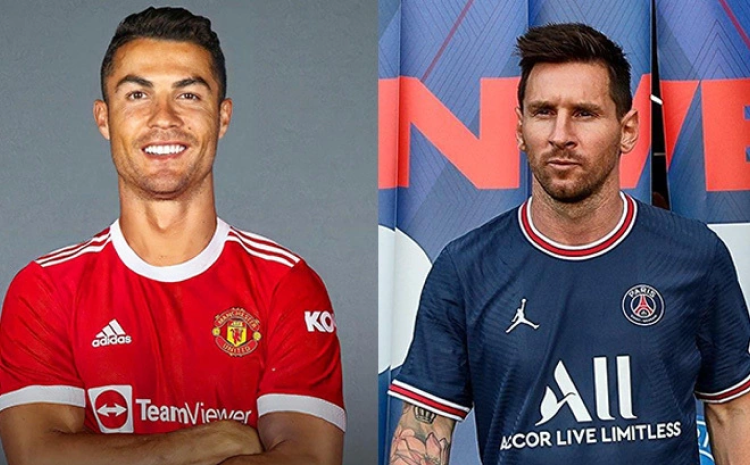

The match kicks off at 5. 30pm BST on Saturday 13th August, 2022. Follow our guide on how to watch a Brentford vs Man United live stream from wherever you are in the world. Watch a Brentford vs Man United live stream on Peacock TV(Image credit: NBCUniversal)Premier League football fans in the US can watch a Brentford vs Manchester United live stream on Peacock TV (opens in new tab) and its Premium service, which shows multiple live Premier League football games every weekend.
Gary Neville has demanded the Glazer family 'come to Manchester' in order to explain what their plan is for Manchester United's future as he again slammed the club's ownership.
'They need a billion for the stadium and probably a few hundred million for the training facilities. They were cash rich a few years ago now they’re struggling. Something has to give.'
Having lost their opening game at home to Brighton 2-1, the search for new players became somewhat more frantic, with United linked with the likes of Marko Arnautovic, Adrien Rabiot and Mauro Icardi.
And with failed approaches for players deemed below the squad's standards, the 47-year-old pundit admitted that the club is in dire need of change. He said: 'I think those players to be fair, Eriksen was new, Martinez was new. It is very difficult to be a 5 foot 9 inch centre back away at Brentford. 'I can’t believe it was 8 or 9 months ago that Rangnick said United needed open heart surgery. No one wants to take their money, they can’t spend the money because no one wants to come here.